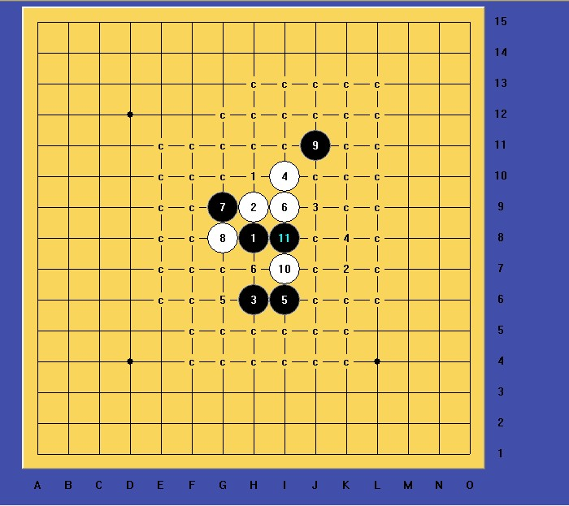
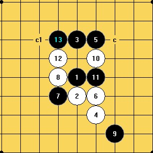

瑞星二打正常定式到12后，孰优？
#1 瑞星二打正常定式到12后，孰优？ 作者：蹲街丶式寂寞 发表时间：2012-1-7 20:39:35
RT！
#2 Re:瑞星二打正常定式到12后，孰优？ 作者：炫飞☆冲四不挡 发表时间：2012-1-7 21:58:46
黑棋控的好，后期黑白都没机会。黑棋控不好，后期白优。#3 Re:瑞星二打正常定式到12后，孰优？ 作者：炫飞☆冲四不挡 发表时间：2012-1-12 17:23:22
呀，你问的是这个不正常的白12呀。那我就不知道了，貌似虫子讲过。#4 Re:瑞星二打正常定式到12后，孰优？ 作者：賢周 发表时间：2012-3-15 10:00:32
#5 Re:瑞星二打正常定式到12后，孰优？ 作者：山城刀客 发表时间：2012-3-15 13:20:27

关于楼主的那个12，是必败，只不过黑杀法复杂猥琐些罢了，空了拆拆看！
［ 蹲街丶式寂寞 于 2012-3-16 3:03:20 时花20金币送鲜花一朵］
#6 Re:瑞星二打正常定式到12后，孰优？ 作者：蹲街丶式寂寞 发表时间：2012-3-16 2:58:20
谢谢山城刀客，知道了这么多12是必败的。
处于实战或者研究一线的，我们自不敢比。作于娱乐下的，我选择实战走法的。
感叹下，看见这些C，就感觉有压力，呵呵~
#7 Re:瑞星二打正常定式到12后，孰优？ 作者：茗弈宽容 发表时间：2012-3-16 14:35:49
#8 Re:瑞星二打正常定式到12后，孰优？ 作者：茗弈宽容 发表时间：2012-3-16 14:36:56
#9 Re:瑞星二打正常定式到12后，孰优？ 作者：山城刀客 发表时间：2012-3-16 15:29:51
关于这个，是别人做的谱，暂时不方便说。
［ 蹲街丶式寂寞 于 2012-3-16 17:33:43 时花20金币送鲜花一朵］